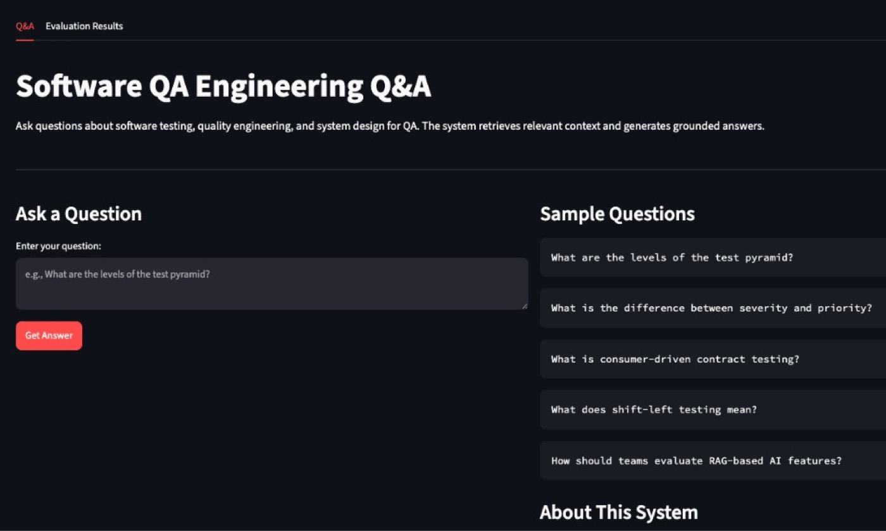
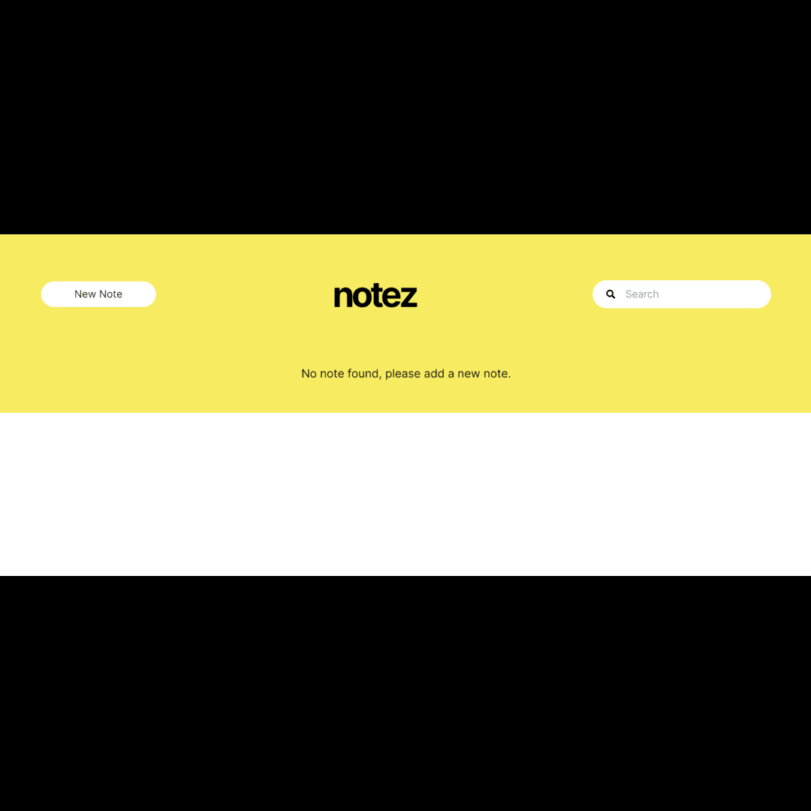
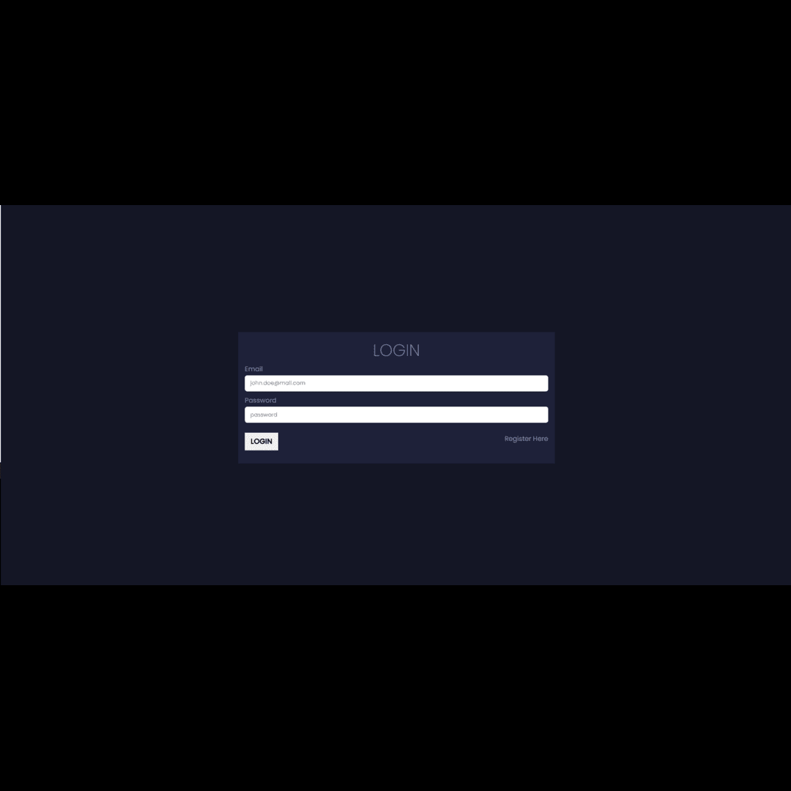
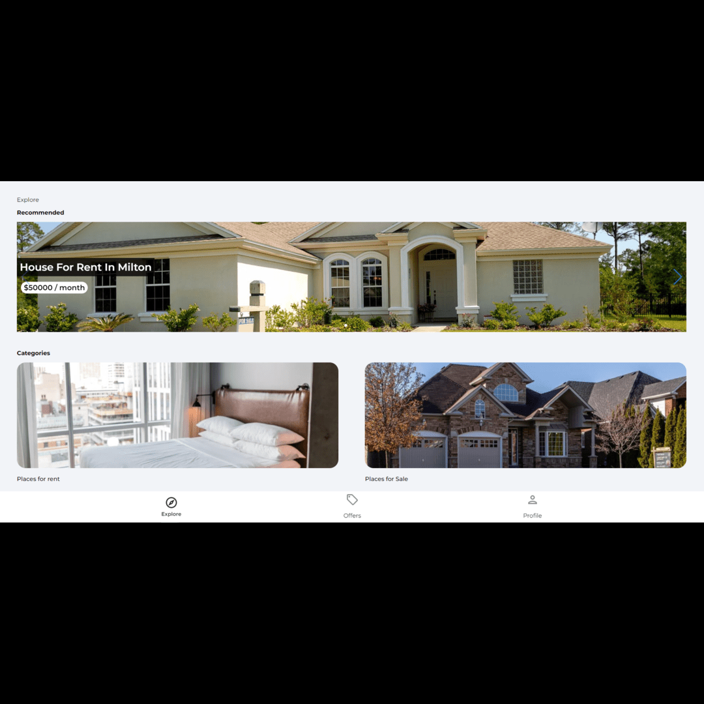

QA RAG Evaluation
A grounded Q&A system for software testing and quality engineering. Asks retrieve relevant context and return answers tailored to QA, system design, and evaluation workflows.
Python · RAG · AI evaluation · QA tooling
Software Developer & Software Development Engineer in Test
I design and build web apps and backend systems across fintech, banking, and digital platforms — then harden them with automated test strategy that improves release confidence.
About
Software Developer & Software Development Engineer in Test with a strong engineering background. I specialize in building and validating web applications, backend services, and API-driven systems across fintech, banking, and digital platforms.
I write production-minded code for APIs, services, and web/app features, and design the automated and manual test strategies, integration checks, automation frameworks, and CI/CD pipelines that keep those systems reliable and release-ready.
Experience
Skills
Python · JavaScript · PHP · Node.js · Java
Selenium · Playwright · Cypress · Pytest · JUnit · Postman
API testing · Regression · Black-box · Load testing · Agile/Scrum · Jira
MySQL · PostgreSQL · MongoDB · SQL Server · Docker · Jenkins · AWS EC2 · Git · Power BI
Selected work

A grounded Q&A system for software testing and quality engineering. Asks retrieve relevant context and return answers tailored to QA, system design, and evaluation workflows.
Python · RAG · AI evaluation · QA tooling



A job-focused web app for organizing opportunities and workflow — currently in development.
JavaScript · Web app
Contact
Open to Software Developer & SDET roles.